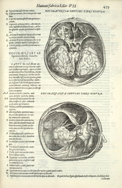

Vesalius' De humani
corpora fabrica in a reduced size version, 1568(1)
This book was printed by Francesco de'Franceschi in Venice in 1568. The
illustrations, which are woodcuts as in Vesalius's original book, were
the work of the Johannes Criegher (Krieger).(2)
They are reduced copies of the originals and are set into the text in the
manner of Vesalius' editions of 1543 and 1555. Mortimer suggested that the
way the landscapes have been removed from the large plates suggests the
influence of Geminus.(3) However, there does not seem to be any direct relationship.
The way the simplification is carried out is quite independent of Geminus.

Thirteenth and Fourteenth Figures of Book 7,
Vesalius, 1568.
(1) The RCPE copy of this
book is annotated on the titlepage: 'pasch Gallus 1592 / Patavii'. [Back]
(2) Porro icones exculpsit Ioannes Criegher Pomeranus, iuvenis
diligentissimus caetera vero quantis studiis e quantis nostri sumptibus.
This is from Francesco de'Franceschi's dedication to Antonio Montecatini.
For Chriegher see G.J. van der Sman, 'Prints and Printmakers in late Sixteenth
Century Venice', in: Renaissance Venice and the North , ed. B. Aikema and
B.L. Brown, London, 1999, p.156. [Back]
(3) Cushing VI.D.-4;
Mortimer, p.663. [Back]
© 2004 Edinburgh University Library / Royal College of Physicians of Edinburgh
www.lib.ed.ac.uk
25 August 2004
|